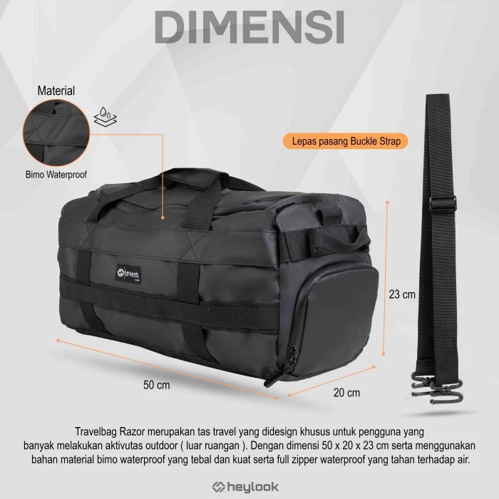

Kamera D-SLR dengan Lensa Telefoto
Fotografer profesional yang ingin memotret burung dan satwa liar biasanya menggunakan kamera full frame dan lensa telefoto. Ada banyak sekali kamera yang tersedia di pasaran. Beberapa contoh produk yang direkomendasikan oleh para fotografer professional adalah kamera Nikon D500 dengan lensa Nikkor 200-500 mm zoom. Ada juga kamera Fujifilm X-T30, Canon EOS 7D Mark II atau sejumlah kamera berformat DX seperti Nikon D7200-7500. Prime lens 400mm, 500mm dan 800mm bisa dipakai jika sang fotografer memiliki uang yang banyak.

Secara pribadi, saya menggunakan kamera Canon 200D dengan lensa Tamron 150-600mm G2. Ini adalah kamera D-SLR jenis pemula (entry level). Di berbagai toko kamera, produk lain juga tersedia seperti Sigma 150-600mm G2. Hasil pemotretan untuk burung-burung di jarak menengah cukup baik. Karena sensor CMOS APS-C 24,1MP dari Canon 200D tergolong kecil, maka kamera ini tidak terlalu mampu memotret burung dikejauhan. Performanya di kondisi minim cahaya juga cukup baik.
Iklan:
Kamera Mirrorless dengan Lensa Telefoto
Sekarang ada juga kamera mirrorless Sony A6400 atau Sony A9 II yang dipadu dengan lensa FE 200-600mm f5.6-6.3 G. Kemampuan lensa ini masi bisa ditingkatkan dengan lensa tele-converter 1,4× atau 2,0×.
Salah satu kamera alternatif terbaik untuk memotret burung adalah Fujifilm X-T3. Lensa yang digunakan adalah Fujinon XF 100-400mm f/4.5-5.6. Di antara kamera itu dan lensa, bisa dipasang tele-konverter 1,4× atau bahkan 2×. Dengan lensa tele-konverter, burung yang bertengger di cabang pohon yang jauh bisa dijangkau dengan mudah. Tapi, semakin panjang lensa yang dipakai, jumlah cahaya yang sampai ke sensor citra di dalam kamera semakin rendah. Akibatnya kamera akan menghasilkan foto agak redup atau kamera memerlukan waktu lebih untuk fokus ke burung yang hendak dipotret.

Kamera Bridge dengan Lensa Permanen
Para pengamat burung yang tidak mementingkan fotografi sebagai pekerjaan mereka biasanya membawa kamera bridge yang berada di zona transisi dari kamera saku ke kamera profesional D-SLR. Sejumlah produk yang tersedia di pasaran dan bisa dibeli di toko-toko kamera antara lain: Nikon Coolpix P1000, Canon SX70HS, Sony RX10 IV. Kamera-kamera tersebut memiliki lensa permanen. Artinya, lensa tidak bisa diganti dengan lensa lain seperti pada kamera D-SLR dan mirrorless.
Teropong pengamatan burung yang saya rekomendasikan: